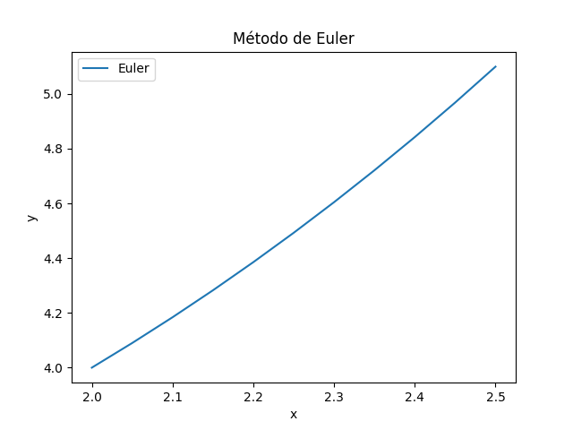
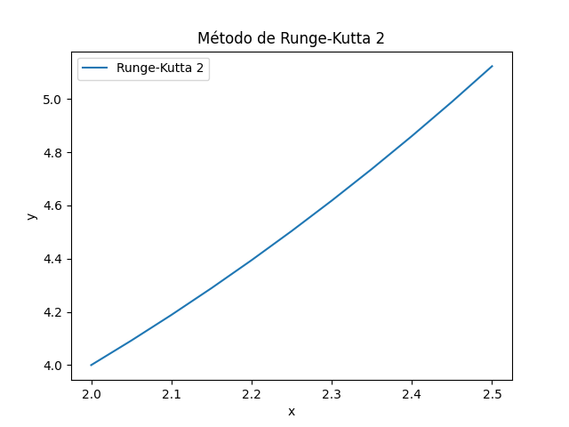

Completar Datos
Para crear las gráficas, rellenamos los datos solicitados. Veamos:
Ecuación Diferencial: dx/dy=0.1np.sqrt(y)+0.4x**2
Condiciones iniciales (x,y): x0 = 2, y0 = 4
Posición final: xf = 2.5
Número de iteraciones: n = 10
A continuación, le damos al botón de calcular y obtendrá una gráfica para cada método
Método de Euler
El método de Euler es uno de los métodos numéricos más simples para resolver ecuaciones diferenciales ordinarias.

Método de Runge-Kutta 2
El método de Runge-Kutta 2 es una mejora sobre el método de Euler, proporcionando mayor precisión.

Método de Runge-Kutta 4
El método de Runge-Kutta 4 es uno de los métodos más utilizados debido a su precisión y estabilidad.